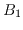
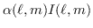

Next: Other deconvolution tasks Up: Image Deconvolution Previous: Computation
The Miriad deconvolution task mfclean
can be used to
avoid this distortion. Rather than just determining a flux density estimate,
mfclean
simultaneously solves for both a flux density and spectral
variation for each source. To understand how this is possible,
consider a noiseless observation of a single point source at the phase centre.
Assume that it has a linear spectral variation. While this is obviously
an approximation, it is an adequate one for dynamic ranges up to several
thousand to one (assuming typical spectral variation and fractional spread in
frequencies of no more than 30%). The visibility function
for this source can be described by two parameters: the source brightness at
some reference frequency, and the brightness derivative.
For a general source, a sum of the two beams is replaced by a convolution
relation:
But how important are the effects that spectral variation causes?
Generally you will want to ignore them if you can, because then
the deconvolution procedure has to solve only the
standard convolution equation,
Surprisingly spectral effects are not very important in a wide variety of problems. For fractional bandwidths of 10%, spectral effects need to be considered for dynamic ranges of better than 1000. For fractional bandwidths of 30%, the effects become important for dynamic ranges of a few hundred. This assumes typical spectral variations equivalent to spectral indices of order 1. When imaging beyond the half-power points of the primary beam, the frequency dependence of the primary beam will be quite substantial, and so spectral variation will need to be considered for lower dynamic range images.
Generally you will need to consider at the imaging step (task invert)
whether you may need to account for spectral variation in the
deconvolution step. If you may, then you need to form the spectral
dirty beam, , as well as the normal dirty beam,  .
If so, you must have set the sdb option in
invert. This produces the spectral dirty beam as a second
plane of the beam dataset. If
you did produce this spectral dirty beam plane, and then use
clean
and maxen, they will issue warnings (which can be
safely ignored) about the existence of the second plane.
.
If so, you must have set the sdb option in
invert. This produces the spectral dirty beam as a second
plane of the beam dataset. If
you did produce this spectral dirty beam plane, and then use
clean
and maxen, they will issue warnings (which can be
safely ignored) about the existence of the second plane.
The inputs to mfclean are fairly similar to clean. Task mfclean differs in that it does not have a Prussian helmet or SDI CLEAN capability. Task mfclean does not support a number of the options given by CLEAN. More fundamental, though, is that, whereas clean can only CLEAN an area a quarter of the beam area, mfclean can strictly speaking CLEAN an area only one ninth of the beam area. To explain the reason for this, we must consider some of the details of mfclean. To aid it in finding peaks in the flux density and spectral index domains, it correlates the residuals with the beam and the spectral dirty beam. More strictly it correlates the residuals with a portion of the beam and spectral dirty beam - the sub-beam. Strictly the sub-beam size should be the same as the region being CLEANed. However in practise, provided it contains most of the main sidelobes, a smaller portion is adequate. Task mfclean will tell you the sub-beam size, and indeed may complain about it being small. However provided it is either at least as big as the region being CLEANed, or is 50-100 pixels, you are probably OK. All the same, however, you should attempt to produce images with larger guard bands if mfclean is to be used.
As with clean, you will almost certainly want to restore your resultant image - see Section 14.6. The output from mfclean is a CLEAN component image with a difference - it contains two planes. The first plane is the normal CLEAN component image (like the one determined by clean), while the second plane contains the estimate of . Both restor (Section 14.6) and a number of other tasks use this second plane.
Miriad manager